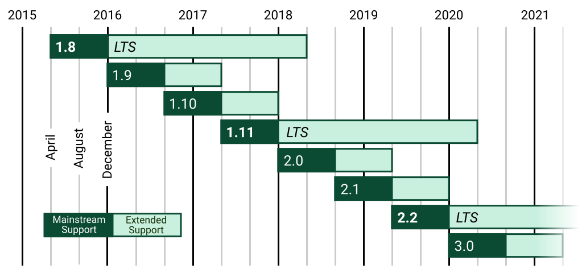

django介绍及安装
| 框架介绍 | |
|---|---|
| Django是一个开源框架，2005年开发，采用python语言编写的。 | |
| 早期是主要做新闻和内容管理的网站 | |
| Django本身提供了非常强大的后台管理系统 | |
| 官网 | http://www.djangoproject.com |
| 中文文档 | http://djangobook.py3k.cn/2.0/ |
版本介绍
版本路线图

横轴代表发行年份。
LTS是长期支持(Long Term Support)的缩写 ，选用django开发时，一般选用长期支持版。
django1.8 2019年就不再支持维护了。
django1.11 2021年 不再支持维护。
笔者学习的时候使用的是django1.11版，现在推荐使用的是django2.2 以后版本。
框架模式
| MTV | |
|---|---|
| M | Models - 模型（数据库） |
| T | Templates - 模板（网页） |
| V | Views - 视图（逻辑） |
Django框架的安装
- 安装最新版本的django
python
pip install django
- 安装指定版本的django
python
pip install django==2.2.6
- 离线安装
django官网下载tar.gz文件，根据官网文档安装